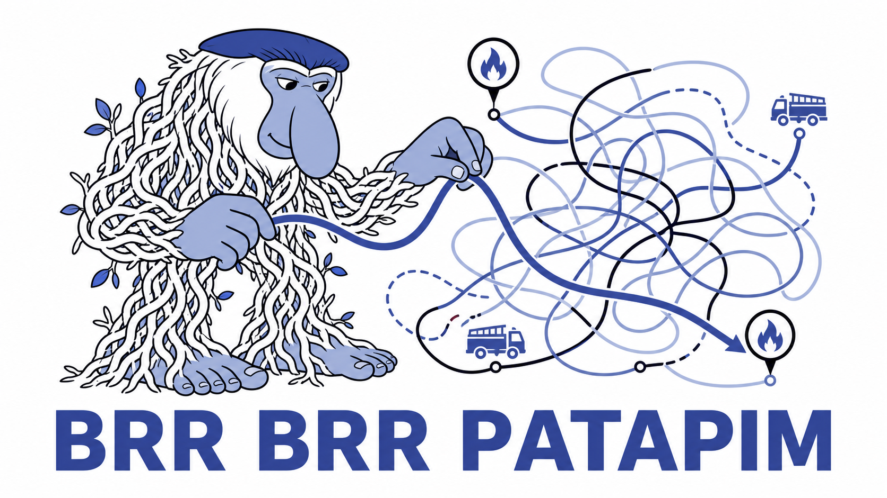

Stage 4: replanning

Stage 4 is when we introduce changing and contradictory evidence: a responder update overturns the headcount that set your priority, and a large new fire ignites while both trucks are already committed. Both require the agent to change its mind and potentially change which fire a truck is heading towards.

What needs to be built
_state_messageindispatch.py. Stage 1 asked it to describe the current state; Stage 4 asks it to describe change - which beliefs moved this tick, which contradictions are outstanding, and which trucks may be redirected. By showing the changing beliefs, you give the model a reason to revisit its past decisions.prompts/dispatch_system.md, specifically “Committing vs holding”. The hold heuristic of “one free truck to the highest-priority uncovered incident” no longer applies. a. Require the agent to file arationaleon everydispatchthat names the trade-off: what is being given up, not just what is being served.- Scenarios, from scratch.
features/ships scenarios tagged@warmup,@stage1, and@stage3- nothing for stage 4, and nothing for stage 2 either, since you wrote those yourself. The tests for this stage do not exist until you write them.
The agent’s tools already support this:
dispatchretargets a truck that is already moving or firefighting. You should call it with the newincident_idfor better tracking.file_incident_updateacceptsstatus: closed. Once an incident is closed, the reason is recorded throughIncidentStore.close.
Product check: when may the agent change its mind?
Before writing the pull-off rule, revisit the human-agent boundary in your product brief:
- When may the agent redirect a truck without asking?
- When should it hold or seek approval?
- What must its explanation contain?
- Which is worse here: a late redirect or a truck that repeatedly changes course?
Add the decision to the product brief, then write a scenario for it. Require each redirect rationale to say why the truck changed course and which incident will now wait longer.
Activity: Change your mind
Spoiler: stuck on Stage 4?
-
Write the scenarios first, since nothing ships. Cover a corrected location, a changed severity, conflicting occupant claims, a false alarm arriving after you dispatched, and a surprise collapse. Tag them
@stage4and widen your CI gate to match, as backpressure engineering set up. -
Exercise update and close through the existing CRUD boundary rather than reaching around it. The store is the only record of what your agent believed and when.
-
Extend the state message so a changed belief is visible as a change. If the model sees an identical-looking state every tick, it will keep making the same decision.
-
Extend “Committing vs holding” with the pull-off rule, then verify a redirect end to end and pin it with a scenario. Require the logged rationale to name the tradeoff.
-
Run it live:
uv run https://dl.hadr.ocelliq.com/hadr-engine.py serve --port 8000 # in its own terminal uv run hadr-runner stage4-replan@londoneRead the rationales afterwards. A run where every rationale is “dispatching to highest priority incident” is a run where nothing was actually reconsidered.
Safety rails
From this stage on the loop runs increasingly unattended, so bound it like one: it may touch its own stores and the typed control surface, nothing else.
- A tick cap, so a stuck episode ends.
- A token-count cap, in case a replanning agent burns tokens at full speed.
These caps must be enforced by code, not by prompt. One of these two caps is already enforced for you elsewhere in the stack and the other has no instrument at all; find out which is which before you build.
When you’re done
- Check the stage actually holds, not just that the tests are green:
- New evidence can change an earlier dispatch decision.
- Contradictions, and your own confidence or belief-strength signal, remain visible in the incident belief state.
- A truck stays in one of the three public states:
idle,moving, orfirefighting.
- Open a pull request with the scenarios, the state message, and the prompt change.
- Have a teammate review the pull-off rule specifically. It can make your score much worse, because a truck that keeps getting redirected never puts out anything.
- Post a redirect on the Padlet: one logged rationale from your live run where the agent gave something up, plus your
stage4-replan@londonecasualties. The interesting posts are the ones where the redirect turned out to be wrong. - Run stage 5 now: play
stage5-triageon all three maps (uv run hadr-runner stage5-triage@londone, then@stockhomeand@feeladelphia), because the finale is one of those three announced on the day, and this is your last chance to find out which one your agent is bad at while you can still change the code.